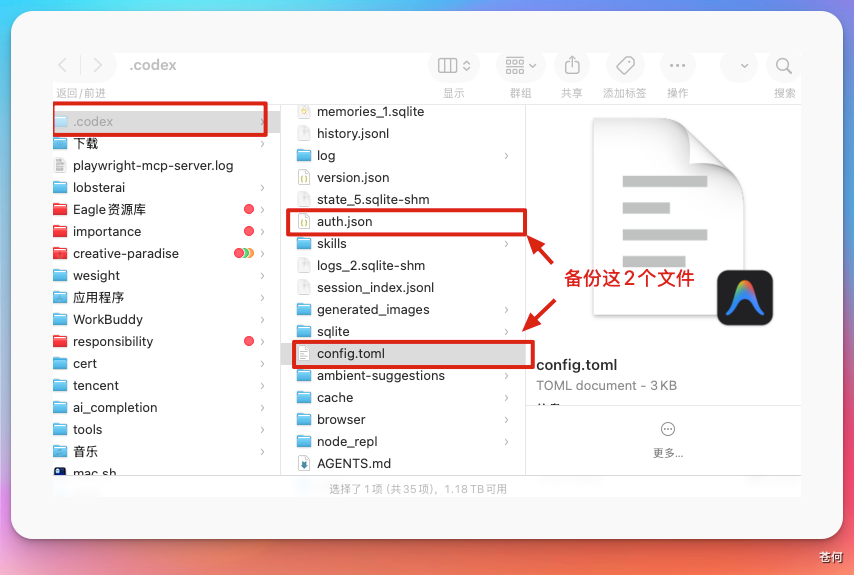
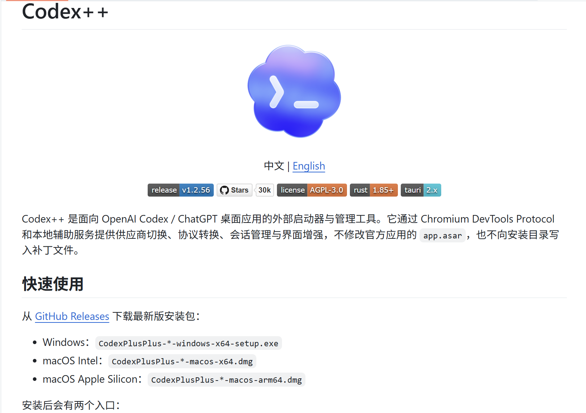
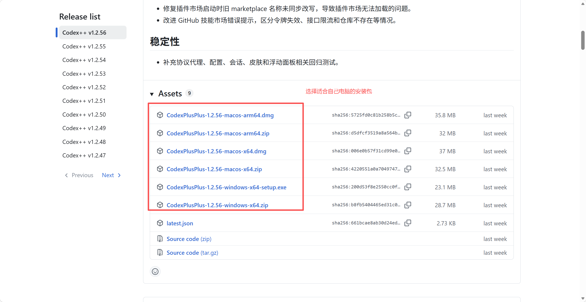
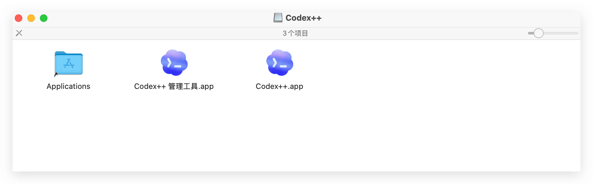
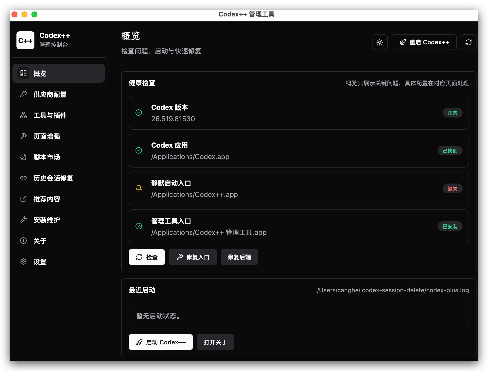
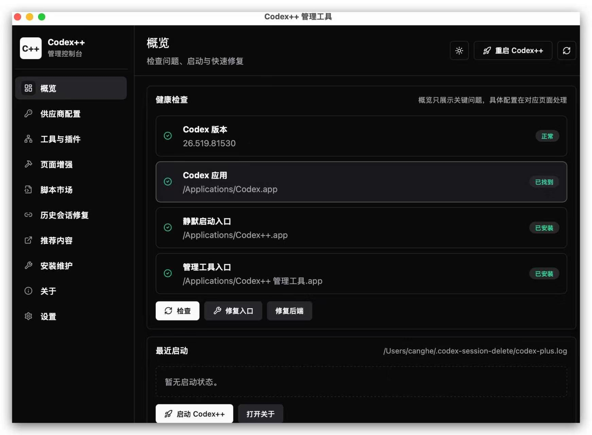
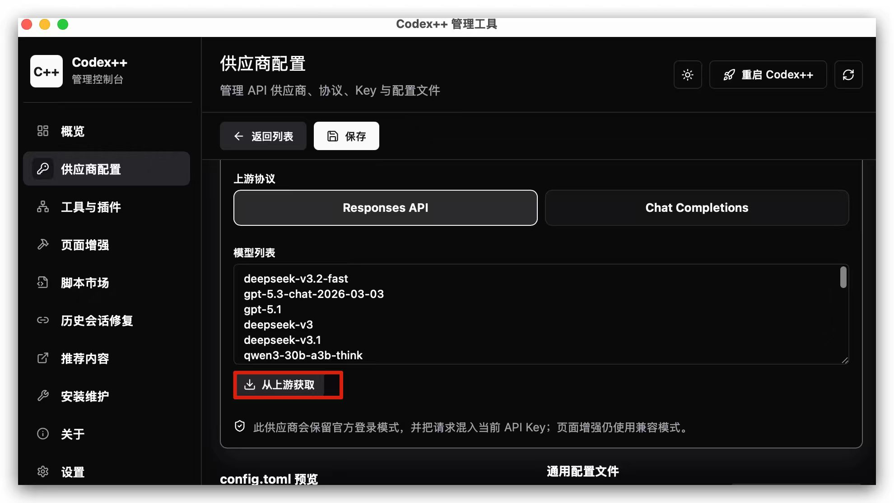
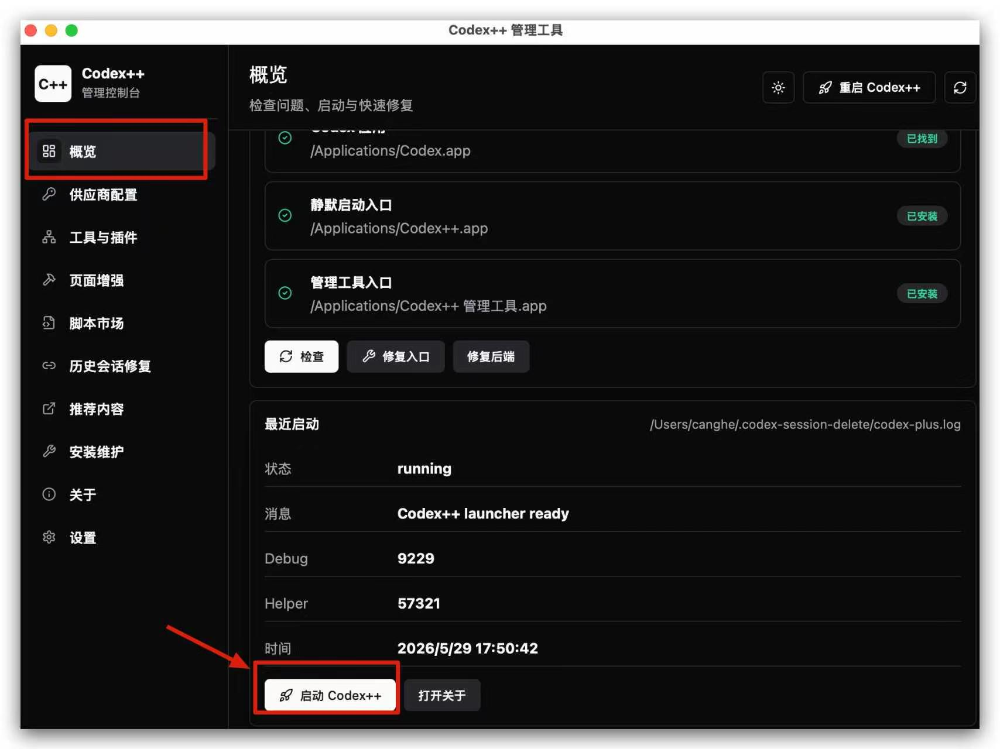
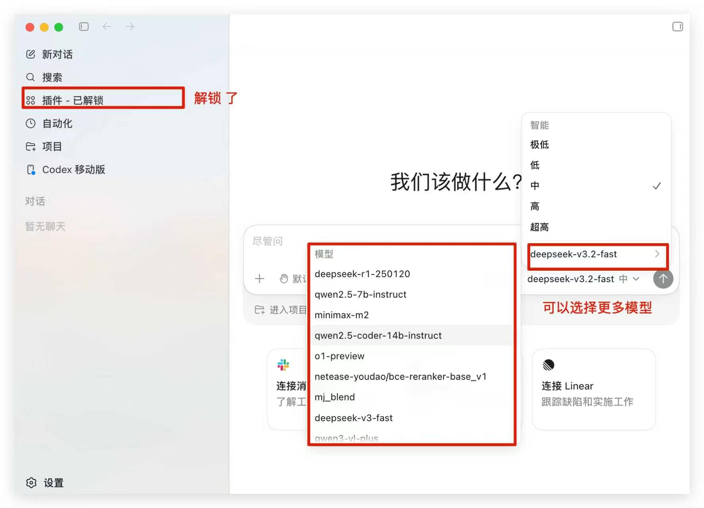
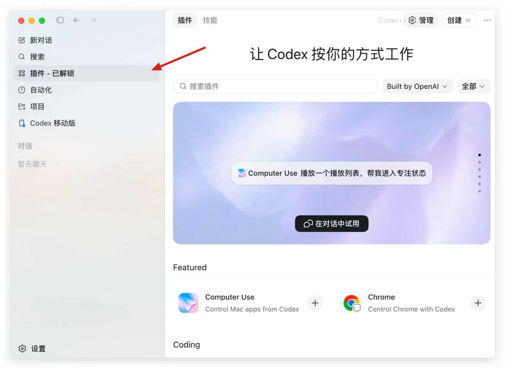

Codex 默认最稳妥的使用方式，是通过官方 ChatGPT / OpenAI 账号登录，并使用官方支持的模型与服务。连接第三方 API 属于进阶配置，适合已经理解 config.toml、API Key、Base URL、模型名和代理网关含义的用户。如果你希望更方便地接入和切换不同模型，也可以通过 packyapi 这类 API 聚合平台进行统一配置。
三种方案怎么选#
| 方案 | 适合谁 | 优点 | 需要注意 |
|---|---|---|---|
| 手动配置 | 想理解 Codex 底层配置的人 | 透明、可控、方便排障 | 要自己维护 config.toml，字段写错就不生效 |
| Codex++ | 主要使用桌面 App，希望图形化管理中转注入的人 | 有管理界面，能把配置写成 CodexPlusPlus provider |
是第三方 launcher / 注入工具，Codex 更新后可能需要跟进适配 |
| CCX + CC Switch | 有多个供应商、需要协议转换和统一切换的人 | CCX 负责网关与路由，CC Switch 负责供应商配置管理 | 组件更多，需要理解本地服务、端口、密钥和代理链路 |
如果你只是刚开始学习 Codex，可以先知道有这条路线，之后完成 第一个任务 再回来看细节。第三方 API 不是入门必需步骤。
方案一：手动配置#
这种是没办法使用 Codex APP 的插件功能的，可以看看方案二可以使用插件功能。

手动配置的核心，是编辑本机的：
~/.codex/config.toml改之前先备份：
cp ~/.codex/config.toml ~/.codex/config.toml.backup
cp ~/.codex/auth.json ~/.codex/auth.json.backup
两类登录思路#
| 思路 | 怎么理解 | 适合场景 |
|---|---|---|
| ChatGPT 登录 | Codex 仍使用 ChatGPT / OpenAI 登录态，provider 只改请求入口或中转地址 | 想保留官方账号能力，同时把请求转到兼容入口 |
| API Key 登录 | Codex 使用环境变量里的 API Key，按 provider 配置请求接口 | 用 OpenAI API Key 或自建兼容 Responses API 的服务 |
不要同时混着改太多东西。第一次配置时，先只新增一个 provider，确认能跑通后再整理多套 profile。
ChatGPT 登录态示例#
也就是你的 Codex 先要登录到 ChatGPT 先。
第一步，手动修改文件配置文件：
在~/.codex/config.toml 文件下添加如下配置。
下面只展示示例，字段和值要按你实际服务填写：
model = "gpt-5-codex" #这里填你想要的模型
model_reasoning_effort = "high"
disable_response_storage = true
preferred_auth_method = "apikey"
[model_providers.example]
name = "example" # 填你的模型提供商名字或者中转站名字，这里以示例服务商为例
base_url = "https://api.example.com/v1" # 填你的模型提供商的请求 URL
wire_api = "responses" # 这里不要变
env_key = "OPENAI_API_KEY" # 这里将会通过环境变量的方式注入并启动Codex APP
requires_openai_auth = false这里的重点是：
model_provider要和[model_providers.xxx]里的xxx完全一致。base_url通常写到/v1，不要把/v1/responses整段写进去。wire_api = "responses"表示 Codex 以 Responses API 的请求形态访问。requires_openai_auth = true表示使用已有 OpenAI / ChatGPT 登录态。

第二步，打开终端输入环境变量
export OPENAI_API_KEY="这里填你的key"
第三步，终端中启动 Codex APP
这里如果是 mac，你要用终端启动，不然可能读不到模型。要特别注意，在启动前要先彻底关闭 Codex APP
终端输入以下命令启动：
open -a Codex第四步，打开 Codex APP
你就可以看到已经应用到新模型了：

API Key 登录示例#
如果你的服务使用 API Key，推荐把密钥放在环境变量里，不要写死在 config.toml：
export OPENAI_API_KEY="sk-your-api-key"对应配置示例：
model = "gpt-5.1-codex-max"
model_provider = "my-api-provider"
[model_providers.my-api-provider]
name = "My API Provider"
base_url = "https://example.com/v1"
wire_api = "responses"
env_key = "OPENAI_API_KEY"
requires_openai_auth = false如果上游只支持 Chat Completions，而不支持 Responses API，通常不能只靠 config.toml 解决，需要使用 CCX 这类网关做协议转换。
修改鉴权文件
打开 ~/.codex/auth.json，然后添加 OPENAI_API_KEY 为你模型服务商的API KEY：

手动配置后怎么验证#
- 完全退出并重新打开 Codex。
- 让 Codex 执行一个只读任务，例如总结当前目录结构。
- 如果失败，先检查
model_provider名称、base_url、wire_api、环境变量和 API Key 权限。 - 出现认证错误时，先切回备份配置，不要反复把真实 Key 粘贴到对话里。
请只读说明当前工作区路径、你准备使用的模型和验证方式。不要修改任何文件。方案二：Codex++#
Codex++ 是面向 Codex App 的外部增强 launcher 和管理工具。根据项目 README，它不修改 Codex App 原始安装文件，而是通过外部 launcher 启动 Codex，并使用 Chromium DevTools Protocol 注入增强脚本。

它更适合这些情况：
- 你主要使用 Codex 桌面 App。
- 你希望通过图形界面维护 Base URL 和 Key。
- 你希望切换回官方 ChatGPT 登录态时，不完全靠手写配置。
- 你能接受第三方 launcher 带来的兼容性和维护风险。
流程步骤#
- 打开 Codex++ Releases，下载与你系统匹配的安装包。

会有 「Codex++ 管理工具」和 「Codex++ app」两个安装包。

- 安装后打开
Codex++ 管理工具。
首次打开如果出现这个错误：
 不要慌，先打开「系统设置」-「隐私与安全性」，点击「仍要打开」：
不要慌，先打开「系统设置」-「隐私与安全性」，点击「仍要打开」：

打开后就会进入到这个管理界面：

同样的方式，安装刚才安装包中的 Codex++ app。你就可以看到管理工具检测全绿了。

确认已经检测到 ChatGPT 登录状态。
- 添加中转配置，填写 Base URL 和 Key。
选择「供应商配置」-添加供应商配置。填写自己的供应商的配置，并填写模型相关信息，注意 接入方式要选「纯API」的方式：

模型列表可以选择从上游获取，如果你配置的是中转站，这里就可以用很多不同的模型了：

可以看到这个工具做的就是帮你更方便的写入配置。

保存后可以测试联通情况，没问题，直接选择使用：

- 从
Codex++入口启动 Codex，而不是从原版 Codex 入口启动。

重新启动后，你就能看到现在 Codex已经完全使用了我们自定义的模型供应商，并可以选择更多的模型。

其中插件也可以直接使用了：

根据 Codex++ README，它会写入类似这样的 provider：
model_provider = "CodexPlusPlus"
[model_providers.CodexPlusPlus]
name = "CodexPlusPlus"
wire_api = "responses"
requires_openai_auth = true
base_url = "https://example.com/v1"
experimental_bearer_token = "sk-..."Codex++ 验证和回滚#
- 验证时，先用只读任务确认 Codex 能正常响应。
- 如果 Codex++ 菜单或增强功能没有出现，确认你是从
Codex++入口启动，而不是原版 Codex。 - 如果要回到官方登录态，在管理工具里清除 API 模式或切回官方配置。
- Codex App 更新后，如果页面结构变化，注入脚本可能需要等待 Codex++ 适配。
方案三：CCX + CC Switch#
这个方案把“网关”和“切换工具”拆开：
- CCX：AI API 代理与协议转换网关，支持 Claude Messages、OpenAI Chat Completions、Codex Responses、Gemini 等入口，也提供 Web 管理界面、渠道编排、故障转移和模型路由。
- CC Switch：桌面管理工具，用来管理 Claude Code、Codex、Gemini CLI 等工具的供应商配置、MCP、Skills 和会话，并支持一键切换。
适合你有多个国产模型 API、多个中转服务、多个 Key，或者需要把 Chat Completions 形态转换成 Codex 可用入口的情况。
第 1 步：部署 CCX#
如果使用 Docker，可以参考 CCX README 中带访问密钥的方式：
docker run -d \
--name ccx \
-p 3000:3000 \
-e PROXY_ACCESS_KEY=your-proxy-access-key \
-e APP_UI_LANGUAGE=zh-CN \
-v $(pwd)/.config:/app/.config \
crpi-i19l8zl0ugidq97v.cn-hangzhou.personal.cr.aliyuncs.com/bene/ccx:latest启动后打开：
http://localhost:3000第 2 步：在 CCX 添加渠道#
在 CCX Web 管理界面里添加你的上游渠道：
- 选择上游服务类型。
- 填写国产模型或中转服务的 API Key。
- 填写 Base URL。
- 配置模型映射、可用模型或路由规则。
- 先用 CCX 自带测试功能确认渠道可用。
这里要确认一件事：Codex 需要的是 Responses API 入口。如果上游只有 Chat Completions，CCX 需要负责协议转换。
第 3 步：安装 CC Switch#
CC Switch 可以用桌面安装包，也可以按你的习惯使用命令行安装。你给出的命令是：
npm install -g cc-switch安装后初始化：
cc-switch init初始化时把 CCX 地址作为中转入口，例如：
http://localhost:3000第 4 步：切换配置并启动 Codex#
切换到你刚配置好的供应商：
cc-switch use <配置名>然后重新启动 Codex，让新的 provider 配置生效。
如果 CC Switch 写入的是 ~/.codex/config.toml，建议切换后打开文件核对一次：
- 当前
model_provider是否是你刚选择的配置。 base_url是否指向 CCX。- API Key 是否没有被写进公开仓库。
- 原有 MCP、Skills、profile 等配置是否还在。
常见问题#
| 现象 | 先检查什么 |
|---|---|
| 切换后没有生效 | 是否完全重启 Codex，model_provider 名称是否一致 |
| 报认证错误 | API Key 是否有效，环境变量是否被当前 shell 继承 |
| 报接口路径错误 | base_url 是否只写到 /v1，不要重复拼上 /responses |
| 国产模型无法响应 | 上游是否支持 Responses API；不支持时需要 CCX 这类网关转换 |
| 插件或 Skills 配置不见了 | 切换工具是否覆盖了通用配置，是否有备份或共享配置片段 |
| 旧会话不可见 | 参考 切换 provider 后历史会话不可见怎么办 |
下一步#
下一步：了解 Codex 基本组成。